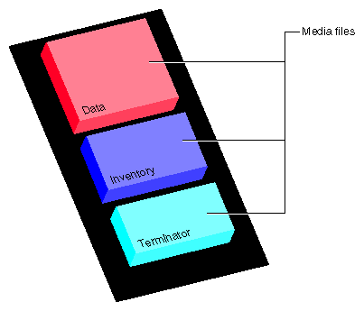
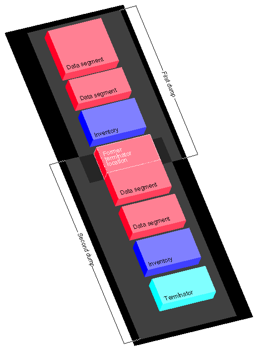

Table of Contents: Basic | Expanded
Table of Contents: Basic | Expanded
Part I, Backup, contains the following chapters:
Chapter 1
Planning a Backup Strategy
Chapter 2
Backup and Recovery Procedures
Chapter 3
Troubleshooting Backup and Recovery
As a site administrator, you must make sure there are backups of the files at your site. Users depend on you to recover files that have been accidentally erased, or lost due to hardware problems.
This chapter contains the following sections:
When you are familiar with backup and have addressed the needs of your site, refer to Chapter 2 for detailed information on the backup utilities that you plan to use.
Some of the common types of backup media supported on Silicon Graphics, Inc., systems include:
In addition to backup devices attached to any particular system, backup devices of various types and capacities may be accessible through network connections. Refer to your owner's guide for information on locally accessible devices, and the appropriate vendor documentation for network-accessible device information.
Certain limitations or conditions described in this chapter might not apply to your specific media. For example, if you back up a 350 MB filesystem with an 8 mm cartridge drive (which can hold up to 1.2 GB), using more than one tape is not a concern. (For more information on tape capacities, see IRIX Admin: Peripheral Devices .)
Robotic media changers, also called autochangers or jukeboxes, have become popular recently. In sequential mode, they can be used with standard IRIX utilities, treating a series of tapes as one long tape. This helps increase aggregate capacity. However, taking full advantage of a media changer requires specialized software such as OpenVault, which enables random access to all volumes in a media library. For updated information, search for "OpenVault" on the Silicon Graphics Web site ( http://www.sgi.com ).
The IRIX system provides a variety of backup tools, and you should use whichever ones work best for you. If many users at your site are already familiar with one backup program, you may wish to use that program consistently. If there are workstations at your site from other manufacturers, you may wish to use a backup utility that is common to all the workstations.
IRIX provides the following utilities for backing up your data:
Optional products for Silicon Graphics systems are also available. IRIX NetWorker is a scalable, full-featured data management tool for data backup and recovery. You can use IRIX NetWorker to back up data on high-end servers, or centrally manage backups for all your network workstations and file servers. Refer to "IRIX NetWorker" for more information.
Backup tools can be classified as filesystem-oriented (Backup and dump) or as file- and directory-oriented (tar and cpio). While backup tool are not limited to either orientation, they are most convenient when used this way. In addition, you can use the dd command to read images exactly as they are written, with or without conversions. You would not normally use dd to create backups, but dd can be useful to read data that is written in a format incompatible with the other backup utilities.
Table 1-1 summarizes the backup utilities available with IRIX.
| Utility | Summary Description | Reference |
|---|---|---|
System Manager | Graphical interface to the cpio utility. Probably best and most convenient tool if you back up only your own system. | Personal System Administration Guide |
Backup and Restore | A command line "front end" to the cpio utility. | Backup(1) and Restore(1) reference pages, and "Backup and Restore Utilities" |
dump and restore | Supports incremental backups and interactive restores. Standard UNIX backup utilities good in heterogeneous environments (but cannot back up XFS filesystems). | dump(1M) and restore(1M) reference pages and "About dump and restore" |
xfsdump and xfsrestore | Supports incremental backups, interactive restores, and interrupt recovery. Use instead of dump and restore on XFS filesystems. | xfsdump(1M) and xfsrestore(1M) reference pages, and "About xfsdump and xfsrestore" |
tar | Most common UNIX backup utility historically and in current distribution, making it portable and thus widely used in very heterogeneous computer environments. | tar(1) reference page and "About tar" |
cpio | Flexible and standard UNIX command generally combined in command line pipes with other commands. | cpio(1) reference page and "About cpio" |
dd | Standard UNIX command to read input and write output with optional conversions. | dd(1M) reference page and "About dd" |
IRIX NetWorker, an extra-cost option, provides backup and archive storage management services for networks of heterogeneous systems. It completely and reliably protects all network data, including extended file attributes such as security information, user profiles, and access control lists.
Use IRIX NetWorker to back up data on Silicon Graphics servers, or use their enormous I/O capabilities to centrally manage backups for all your network workstations and file servers. NetWorker provides network backup support for all major UNIX systems, plus PC, NetWare, and Macintosh systems. IRIX NetWorker provides the following:
See your Silicon Graphics sales representative for complete information on optional backup solutions.
You should develop a regimen for backing up the system or systems at your site and follow it closely. That way, you can accurately assess which data you can and cannot recover in the event of a mishap.
Exactly how you perform backups depends upon your workstation configuration and other factors. Regardless of the strategy you choose, though, you should always keep at least two full sets of reasonably current backups. You should also encourage users to make their own backups, particularly of critical, rapidly changing files. Users' needs can change overnight, and they know best the value of their data.
Workstation users can back up important files using the System Manager, found in the "System" toolchest on your screen. The System Manager is described in detail in the Personal System Administration Guide . Make sure users have access to an adequate supply of media (for example, cartridge tapes), whether new or used.
If your media can handle your largest filesystem with a single volume, you don't have to use an incremental backup scheme, though such a system reduces the amount of time you spend making backups. However, if you must regularly use multiple volumes to back up your filesystems, then an incremental backup system reduces the number of tapes you use.
The following sections discuss the different aspects of backing up data.
How often you back up your data depends upon how busy a system is and how critical the data is.
A simple rule of thumb is to back up any data on the system that is irreplaceable or that someone does not want to reenter.
On systems with separate root and user filesystems, the root filesystem is fairly static. You do not need to back it up as frequently as the /usr filesystem.
Changes may occur when you add software, reconfigure hardware, change the site-networking (and the system is a server or network information service [NIS] master workstation), or change some aspect of the workstation configuration. In some cases, you can maintain backups only of the individual files that change, for example, /unix, /etc/passwd, and so forth.
This process of backing up single files is not always simple. Even a minor system change such as adding a user affects files all over the system, and if you use the graphical System Manager, you may tend to forget all the files that may have changed. Also, if you are not the only administrator at the site, you may not be aware of changes made by your coworkers. Using complete filesystem backup utilities, such as the System Manager or Backup, on a regular schedule avoids these problems.
A reasonable approach is to back up the root partition once a month. In addition to regular backups, here are some specific times to back up a root filesystem:
If your system is very active, or if you are not the only administrator, back up the root filesystem regularly.
The /usr filesystem  , which often contains both system programs (such as in /usr/bin) and user accounts, is usually more active than a root filesystem. Therefore, you should back it up more frequently.
, which often contains both system programs (such as in /usr/bin) and user accounts, is usually more active than a root filesystem. Therefore, you should back it up more frequently.
At a typical multiuser installation, backing up once per day, using an incremental scheme, should be sufficient.
Treat the /var filesystem similarly - it contains data such as the contents of users' mailboxes.
Incremental backups can use fewer tapes to provide the same level of protection as repeatedly backing up the entire filesystem. They are also faster than backing up every file on the system.
An incremental scheme for a particular filesystem looks something like this:
You can recycle daily tapes every month, or whenever you feel safe about doing so. You can keep the weekly tapes for a few months. You should keep the monthly tapes for about one year before recycling them.
If you are managing a site with many networked workstations, you may wish to save backups on a device located on a central workstation.
To back up across a network, use the same basic backup commands, but with a slight change. Enter:
system_name:/dev/tape
If required, specify an account on the remote device:
user@system_name:/dev/tape
Users can use a central tape drive from their workstations with this method. Note that if you are backing up to a remote tape drive on a workstation that is not made by Silicon Graphics, the device name /dev/tape may not be the correct name for the tape drive. Always learn the pathname of the tape device before executing the backup commands.
For example:
tar cvf guest@alice:/dev/tape ./bus.schedule
or
echo "./bus.schedule" | cpio -ovcO guest@alice:/dev/tape
You can use the cron utility to automatically back up filesystems at predetermined times. The backup media must be already mounted in the drive, and, if you want this to be truly automatic, it should have enough capacity to store all the data being backed up on a single piece of media. If all the data doesn't fit, then someone must manually change backup media.
Here is an example cron command to back up the /usr/src hierarchy to /dev/tape (tape drive) every morning at 03:00 using Backup:
0 3 * * * /usr/sbin/Backup -t /dev/tape /usr/src
Place this line in a crontabs file, such as /var/spool/cron/crontabs/root.
This sort of command is useful as a safety net, but you should not rely on automatic backups. There is no substitute for having a person monitor the backup process from start to finish and properly archive and label the media when the backup is finished. For more information on using cron to perform jobs automatically, see IRIX Admin: System Configuration and Operation .
Store your backup tapes carefully. Even if you create backups on more durable media, such as optical disks, take care not to abuse them. Set the write protect switch on tapes you plan to store as soon as a tape is written, but remember to unset it when you are ready to overwrite a previously-used tape.
Do not subject backups to extremes of temperature and humidity, and keep tapes away from strong electromagnetic fields. If there are a large number of workstations at your site, you may wish to devote a special room to storing backups.
Store magnetic tapes, including 1/4 in. and 8 mm cartridges, upright. Do not store tapes on their sides, as this can deform the tape material and cause the tapes to read incorrectly.
Make sure the media is clearly labeled and, if applicable, write-protected. Choose a label-color scheme to identify such aspects of the backup as what system it is from, what level of backup (complete versus partial), what filesystem, and so forth.
To minimize the impact of a disaster at your site, such as a fire, you may want to store main copies of backups in a different building from the actual workstations. You have to balance this practice, though, with the need to have backups handy for recovering files.
If backups contain sensitive data, take the appropriate security precautions, such as placing them in a locked, secure room. Anyone can read a backup tape on a system that has the appropriate utilities.
You can keep backups as long as you think you need to. In practice, few sites keep system backup tapes longer than about a year before recycling the tape for new backups. Usually, data for specific purposes and projects is backed up at specific project milestones (for example, when a project is started or finished).
As site administrator, you should consult with your users to determine how long to keep filesystem backups.
With magnetic tapes, however, there are certain physical limitations. Tape gradually loses its flux (magnetism) over time. After about two years, tape can start to lose data.
For long-term storage, re-copy magnetic tapes every year to year-and-a-half to prevent data loss through deterioration. When possible, use checksum programs, such as the sum(1) utility, to make sure data hasn't deteriorated or altered in the copying process. If you want to reliably store data for several years, consider using optical disk.
You can reuse tapes, but with wear, the quality of a tape degrades. The more important the data, the more precautions you should take, including using new tapes.
If a tape goes bad, mark it as "bad" and discard it. Write "bad" on the tape case before you throw it out so that someone doesn't accidentally try to use it. Never try to reuse an obviously bad tape. The cost of a new tape is minimal compared to the value of the data you are storing on it.
This chapter provides examples of how to use the various backup and recover tools described in Chapter 1.
All of the utilities discussed in this chapter support more options than can be shown here, but the examples combined with the discussions in Chapter 1 should provide enough information for you to choose and begin to use the tools best suited for your environment.
For a complete description of the options available with a particular tool, refer to the reference page for that tool (for example, see tar(1) for the tar command).
This chapter is divided into the following sections:
Follow these steps when making a backup, no matter which backup utility you use:
Dirty tape heads can cause read and write errors. New tapes shed more oxide than older tapes, so you should clean your drive more frequently if you use a lot of new tapes.
Also, use good-quality media. Considering the value of your data, use the best quality media you can afford.
This step is not necessary if you are backing up only a few files (for example, with tar).
See "Storage of Backups" for information on safely storing your backups.
To make a backup of your system on any system with a graphical user interface, bring up the System menu on the System Toolchest and choose Backup & Restore. Follow the prompts to perform your backup. A complete set of instructions for this procedure is available in the Personal System Administration Guide .
Backups made with the Backup & Restore window are the easiest to make and use, and (if they are full system backups) are accessible from the Recover System option on the System Maintenance Menu. When you make a full system backup, the command also makes a backup of the files in the disk volume header and saves the information in a file that is stored on tape. This file is used during system recovery to restore a damaged volume header.
To make a backup of your system using an IRIX command, use the Backup(1) command. Although it is a front-end interface to the cpio(1) command, Backup also writes the disk volume header on the tape so that the Recover System option can reconstruct the boot blocks, which are not written to the tape using other backup commands. For more information, see the section "Backup and Restore Utilities".
If your root filesystem is damaged and your system cannot boot, you can restore your system from the Recover System option on the System Maintenance Menu. This is the menu that appears when you interrupt the boot sequence before the operating system takes over the system. To perform this recovery, you need two things:
If you do not have a full system backup made with the Backup command or Backup and Restore window - and your root or usr filesystems are so badly damaged that the operating system cannot boot - you have to reinstall your system software and then read your backup tapes (made with any backup tool you prefer) over the freshly installed software.
You may also be able to restore filesystems from the miniroot. For example, if your root filesystem has been corrupted, you may be able to boot the miniroot, unmount the root filesystem, and then use the miniroot versions of restore, xfs_restore, Restore, cpio, or tar to restore your root filesystem. Refer to the following discussions of these commands for details on how to use them.
To recover from system corruption using the Recover System option on the System Maintenance Menu, follow these steps:
Starting up the system...
Click the Stop for Maintenance button or press Esc to bring up the System Maintenance menu.
4
This System Recovery menu appears or you see a graphical equivalent:
System Recovery...
Press Esc to return to the menu.
1) Remote Tape 2) Remote Directory 3) Local CD-ROM 4) Local Tape
Enter 1-4 to select source type, Esc to quit,
or Enter to start: Note: As of IRIX 6.2, the Remote Tape and Local Tape options on the System Recovery window are no longer usable because bootable (miniroot) software distribution tapes are no longer supported.
You then see a notifier prompting you to insert the media into the drive. Insert the IRIX CD that came with your system, then click Continue.
When a notifier appears asking you for the remote hostname, type the system's name, a colon (:), and the full pathname of the CD-ROM drive, followed by /dist. For example, to access a CD-ROM drive on the system mars, you would type:mars:/CDROM/dist
Click Accept on the notifier window, then click Accept on the System Recovery window.
On systems without graphics, you are prompted for the host as above, then you see this menu:1) Remote Tape 2)[Remote Directory] 3) Local CD-ROM 4) Local Tape *a) Remote directory /CDROM/dist from server mars. Enter 1-4 to select source type, a to select source, Esc to quit, or Enter to start:
Press Enter.
When a notifier appears that asks you to enter the name of the remote host, type the system's name, a colon (:), and the full pathname of the software distribution directory. For example:mars:/dist/6.2
Click Accept on the notifier window, then click Accept on the System Recovery window.
On systems without graphics, you are prompted for the host as above, then you see this menu:1) Remote Tape 2)[Remote Directory] 3) Local CD-ROM 4) Local Tape *a) Remote directory /dist/6.2 from server mars. Enter 1-4 to select source type, a to select source, Esc to quit, or Enter to start:
Press Enter.
************************************************************ * * * CRASH RECOVERY * * * ************************************************************ You may type sh to get a shell prompt at most questions Checking for tape devices
The next message asks for the location of the tape drive that you will use to read a system backup tape created before the system crash using the Backup & Restore tool or using the Backup(1) command.
Restore will be from tapename. OK? ([y]es, [n]o): [y]
tapename is the name of the local tape device. Answer y if this is the correct tape drive and n if is not.
Remote or local restore ([r]emote, [l]ocal): [l]
Insert the first Backup tape in the drive, then
press (Enter, [q]uit (from recovery), [r]estart):
Erase all old filesystems and make new ones (y, n, sh): [n]
You have three choices:
Do you have incremental backup tapes to restore ([y]es, [n]o (none)): [n]
Insert another tape and answer y if you have additional tape, answer n otherwise.
Reboot, start over, or first tape again? ([r]eboot, [s]tart, [f]irst) [r]
If you are ready to reboot, answer r, otherwise choose start or first.
At some point in the life of your workstation, you may choose to add a new storage media device. If you wish to change the default backup device to use your new hardware, the following instructions provide complete information. You can also use the graphical System Manager; it is the preferred tool for this operation and is described completely in the Personal System Administration Guide . Note, however, that no matter which method you use to select your preferred device, installing new system software or using the MAKEDEV(1M) command may reset the default Backup device. For more information on adding a storage media device, see IRIX Admin: Peripheral Devices .
The method of changing the system default tape device is to relink both /dev/tape and /dev/nrtape to the desired device. Use the following procedure:
ls -l /dev/tape lrwxr-xr-x 1 root sys 10 Sep 30 11:23 tape -> rmt/tps0d5 ls -l /dev/rmt/tps0d5 crw-rw-rw- 1 root sys 0,1416 Jan 29 18:21 /dev/rmt/tps0d5
Since rmt is a symbolic link to /hw/tape, /dev/tape actually refers to /hw/tape/tps0d5.
ls -l /hw/tape
You see something similar to this:
crw-rw-rw- 1 root sys 0,1416 Jan 29 18:14 tps0d5 crw-rw-rw- 1 root sys 0,1424 Jan 29 18:14 tps0d5c crw-rw-rw- 1 root sys 0,1417 Jan 29 18:14 tps0d5nr crw-rw-rw- 1 root sys 0,1425 Jan 29 18:14 tps0d5nrc crw-rw-rw- 1 root sys 0,1417 Jan 29 18:14 tps0d5nrns crw-rw-rw- 1 root sys 0,1425 Jan 29 18:14 tps0d5nrnsc crw-rw-rw- 1 root sys 0,1421 Jan 29 18:14 tps0d5nrnsv crw-rw-rw- 1 root sys 0,1429 Jan 29 18:14 tps0d5nrnsvc crw-rw-rw- 1 root sys 0,1419 Jan 29 18:14 tps0d5nrs crw-rw-rw- 1 root sys 0,1427 Jan 29 18:14 tps0d5nrsc crw-rw-rw- 1 root sys 0,1423 Jan 29 18:14 tps0d5nrsv crw-rw-rw- 1 root sys 0,1431 Jan 29 18:14 tps0d5nrsvc crw-rw-rw- 1 root sys 0,1421 Jan 29 18:14 tps0d5nrv crw-rw-rw- 1 root sys 0,1429 Jan 29 18:14 tps0d5nrvc crw-rw-rw- 1 root sys 0,1416 Jan 29 18:14 tps0d5ns crw-rw-rw- 1 root sys 0,1424 Jan 29 18:14 tps0d5nsc crw-rw-rw- 1 root sys 0,1420 Jan 29 18:14 tps0d5nsv crw-rw-rw- 1 root sys 0,1428 Jan 29 18:14 tps0d5nsvc crw-rw-rw- 1 root sys 0,1418 Jan 29 18:14 tps0d5s crw-rw-rw- 1 root sys 0,1426 Jan 29 18:14 tps0d5sc crw-rw-rw- 1 root sys 0,1399 Jan 29 12:08 tps0d5stat crw-rw-rw- 1 root sys 0,1422 Jan 29 18:14 tps0d5sv crw-rw-rw- 1 root sys 0,1430 Jan 29 18:14 tps0d5svc crw-rw-rw- 1 root sys 0,1420 Jan 29 18:14 tps0d5v crw-rw-rw- 1 root sys 0,1428 Jan 29 18:14 tps0d5vc
The device at the top of this listing is the current /dev/tape, although tps0d5ns is the same device. The "c" suffix indicates compression, "nr" indicates no-rewind, "ns" indicates non-swapping, "s" byte swapping, and "v" variable block size.
rm /dev/tape ln -s rmt/tps0d5v /dev/tape rm /dev/nrtape ln -s rmt/tps0d5nrv /dev/nrtape
Most programs use /dev/tape or /dev/nrtape as the default tape device. If a program does not seem to be working correctly, first ensure that it is using the correct tape device.
For tape drives that perform hardware compression, such as DLT, the IRIX tape interface provides the option letter "c" to indicate a compression device. For example, to save files using hardware compression, make /dev/tape and /dev/nrtape links to the devices ending with a "c" in /dev/rmt:
ln -s rmt/tps0d5vc /dev/tape ln -s rmt/tps0d5nrvc /dev/nrtape
It is also possible to compress data using software before saving to tape; see compress(1) and pack(1) for two possible choices.
The Backup and Restore utilities are front-end interfaces to cpio. They support remote hostname and tape device options, and Backup creates a volume header file listing that Restore uses for recovering the files and directories. For complete information, consult the Backup(1) and Restore(1) reference pages.
If you are planning to use the System Maintenance menu Recovery option, use Backup or the backup facility of the graphical System Manager, as those are the only formats accepted by the System Maintenance Menu. The System Manager is described in detail in the Personal System Administration Guide .
Before you begin backup, use the df command to estimate how much space is required for a complete archive. This command, for example, shows the number of KB required to back up the root partition:
df -k /
With Backup, you can back up files, directories, whole filesystems, and full systems on local or remote devices. Full system backups include the ability to recover a damaged volume header and also to back up only those files modified since a previous backup. The syntax for the Backup command is:
Backup [-h hostname] [-t device] [-i] directory_name | filename
To back up an entire disk to the default tape device, enter:
Backup /
This Backup command archives the entire system. The current date is saved in the file /etc/lastbackup.
Note: In order to use a Backup tape to restore your system from the System Maintenance Menu, you must make a full system backup. When you make a full system backup, the command also makes a backup of the names of the files in the disk volume header and saves the information in a file that is stored on tape. This file is used during system recovery to restore a damaged volume header.
You can make a backup relative to the last full system backup by entering:
Backup -i /
To back up a specific directory and its subdirectories, enter the top-level directory name. For example, to back up the usr hierarchy, enter the following:
Backup /usr
To use a remote tape drive, use the -h hostname option:
Backup -h guest@alice.cbs.tv.com:/dev/tape /usr/people/ralph
This would back up the directory /usr/people/ralph on the /dev/tape device on the host alice.cbs.tv.com. You must have at least guest login privileges on the remote system in order to use a remote tape drive.
To back up a file, enter the filename. For example:
Backup people.tar.Z
Files (and directories) are stored relative to the current directory if the backup is made with a relative pathname as shown in this example. Relative pathnames are those that do not begin with a slash (/) character. Pathnames that begin with a slash are known as absolute pathnames. For example, /usr/bin/vi is an absolute pathname. The leading slash indicates that the pathname begins at the root directory of the system. In contrast, work/special.project/chapter1 is a relative pathname since the lack of a leading slash indicates that the path begins with a directory name in the current directory.
The Restore command is a shell script that uses tar to extract files from a backup (see "About tar"). You can also use Restore to read tapes made using the graphical System Manager (see the Personal System Administration Guide ).
You can recover multivolume backups with Restore. Enter:
Restore
and you are prompted to insert the tape into the drive.
To extract a single file, use this command:
Restore file1
With the -h option, you can specify the tape drive on a different host workstation. You must have guest login privileges in order to extract data from a remote drive.
Restore -h guest@alice.cbs.tv.com file1
Files are restored into the current directory if the backup was made with relative pathnames. Relative pathnames are those that do not begin with a slash (/) character. Pathnames that begin with a slash are known as absolute pathnames. For example, /usr/bin/vi is an absolute pathname. The leading slash indicates that the pathname begins at the root directory of the system. In contrast, work/special.project/chapter1 is a relative pathname since the lack of a leading slash indicates that the path begins with a directory name in the current directory.
Existing files of the same pathname on the disk are overwritten during a restore operation even if they are more recent than the files on tape. You must be especially careful, then, if you are restoring files with absolute pathnames, because regardless of your current working directory, the file is restored where the pathname indicates.
For example, if the file you are restoring was backed up as /etc/passwd and you are in the directory /tmp, the file you restore overwrites the /etc/passwd file. If the file you are restoring was backed-up as passwd, then restore the passwd file into /tmp.
The dump and restore programs are standard filesystem backup utilities used on many UNIX systems. These commands are only used with EFS filesystems. Refer to "About xfsdump and xfsrestore" to dump and restore XFS filesystems. The dump program makes incremental backups of entire filesystems.
Use restore to retrieve files from a dump archive. With restore, you can restore an entire filesystem or specific files. It also has an interactive mode that lets you browse the contents of an archive, select specific files, and restore them.
The dump utility archives not only regular files, but also device files and special files such as links and named pipes. To recover files from an archive, you use the restore command. The date on which you last ran the dump program is stored in the file /etc/dumpdates when you specify the u option to indicate an update.
This command backs up all files on the /usr filesystem:
dump 0 /dev/usr
Note: The 0 in the example specifies the increment level. Refer to the next section for an explanation of level numbers.
The dump utility is designed for incremental backups, and it archives not only regular files and directories, but also special files, links, and pipes.
To create an incremental backup, specify an increment number when you use dump. The dump program archives all files (including special files, links, and named pipes) that have changed since the last appropriate increment. To recover files from an archive, use the restore command.
The dump program is designed specifically to create incremental backups. It refers to the increments as levels, and each level is assigned a number:
For example, this command backs up all files on the /usr filesystem:
dump 0 /dev/usr
This command backs up those files that have changed since the previous level 0 dump:
dump 1 /dev/usr
This command archives those files that have changed since the previous level 1 dump:
dump 2 /dev/usr
If the next dump command you give specifies level 1, the dump utility backs up the files that have changed since the last level 0, but not those that have changed since the last level 2. This numbering system gives you enormous flexibility so you can create a backup schedule to fit your specific needs.
Use restore to recover files and filesystems made with the dump program. There are two ways to use restore: interactively and non-interactively.
Use the interactive option to recover moderate numbers of files from a dump archive. With the interactive feature of restore, you can browse the contents of a tape to locate and extract specific files.
Use the non-interactive mode to recover an entire backup. For example, place the backup in the drive and enter:
restore -x
If your root filesystem is damaged and needs to be completely restored, see "Recovering Data After System Corruption". This section explains how to restore a damaged root filesystem when the system cannot boot. It also describes how to safely restore system files on the root filesystem.
Caution: Restoring IRIX system files on an active root filesystem disk may cause damage to the filesystem and system failure.
To recover individual files from an archive created by the dump utility, follow these steps:
# restore vi Verify tape and initialize maps Tape block size is 32 Dump date: Wed Feb 13 10:18:59 1991 Dumped from: the epoch Level 0 dump of an unlisted filesystem on ralph:/dev/rusr Label: none Extract directories from tape Initialize symbol table. restore >>
restore > ls
2 *./ 973 source 1502 net/ 2 *../ 149 d2/ 1445 os/ 10 .cshrc 155016 debug/ 1437 proto3.5/ 1463 .gamma 69899 dev/ 1494 revE 1464 .gamtables 696 etc/ 2122 stand/ 160 .kshrc 137 bin/ 3 tmp/ 1540 .lastlogin 1311412 jake/ 128 unix 819 .login 424 lib/ 128 unix.debug 820 .profile 9 lost+found/ 4 usr/
To continue browsing, enter the following commands to the restore>> prompt:
restore >> cd etc restore >> pwd /etc
restore >> add fstab restore >> add fsck
If you enter ls at this point, you see a list of files, and fsck and fstab are marked with an asterisk to show they will be extracted. If you want to remove a file from the list of those to be extracted, use the delete command:
restore > delete fstab
restore > extract Extract requested files You have not read any tapes yet. Unless you know which volume your file(s) are on you should start with the last volume and work towards the first. Specify next volume #: 1 Mount tape volume 1 then enter tape name (default: /dev/tape) <Return> extract file ./etc/fsck Add links Set directory mode, owner, and times. set owner/mode for '.'? [yn] n restore > q
To recover only a few files, you may wish to use the non-interactive options of restore. For example, enter:
restore -x ./usr/people/ralph/bus.schedule ./etc/passwd
This recovers the files bus.schedule and passwd from the archive.
This section describes how the xfsdump and xfsrestore utilities work and how to use them to back up and recover data on XFS filesystems. (The xfsdump(1M) and xfsrestore(1M) reference pages provide online information on these utilities.) Table 2-1 summarizes when to use xfsdump and when to use its EFS counterpart, dump(1M)
| For a Filesystem of Type | Dump It Using |
|---|---|
EFS | dump |
XFS | xfsdump |
Table 2-2 summarizes when to use xfsrestore and when to use its EFS counterpart, restore(1M).
| For a Dump Made Using | Restore It Using | On a Filesystem of Type |
|---|---|---|
dump | restore | EFS or XFS |
xfsdump | xfsrestore | EFS or XFS |
Note than you can restore data in either EFS or XFS filesystems, but must use the restore utility that corresponds with the dump utility used to make the backup.
The xfsdump and xfsrestore utilities fully support XFS filesystems. With xfsdump and xfsrestore, you can back up and restore data using local or remote drives. You can back up filesystems, directories, and/or individual files, and then restore filesystems, directories, and files independently of how they were backed up. xfsdump also allows you to back up "live" (mounted, in-use) filesystems.
With xfsdump and xfsrestore, you can recover from intentional or accidental interruptions - this means you can interrupt a dump or restore at any time, and then resume it whenever desired. With xfsrestore, you can restore xfsdump data onto EFS filesystems. (xfsdump backs up mounted XFS filesystems only.) xfsdump and xfsrestore support incremental dumps, and multiple dumps can be placed on a single media object. The utilities can automatically divide a dump among multiple drives, and can restore a dump from multiple drives. This allows you to perform faster dumps and restores.
xfsdump and xfsrestore support XFS features including 64-bit inode numbers, file lengths, holes, and user-selectable extent sizes. They support multiple media types, all IRIX-supported file types (regular, directory, symbolic link, block and character special, FIFO, and socket), and retain hard links. xfsdump does not affect the state of the filesystem being dumped (for example, access times are retained). xfsrestore detects and bypasses media errors and recovers rapidly after encountering them. xfsdump does not cross mount points, local or remote.
xfsdump optionally prompts for additional media when the end of the current media is reached. Operator estimates of media capacity are not required and xfsdump also supports automated backups. xfsdump maintains an extensive online inventory of all dumps performed. Inventory contents can be viewed through various filters to quickly locate specific dump information. xfsrestore supports interactive operation, allowing selection of individual files or directories for recovery. It also permits selection from among backups performed at different times when multiple dumps are available. Dump contents may also be viewed noninteractively.
Note: If you are using disk quotas on XFS filesystems, refer to "Administering Disk Quotas on XFS Filesystems" in IRIX Admin: Disks and Filesystems for more information.
The following section introduces some terminology and then describes the way xfsdump formats data on the storage media for use by xfsrestore.
While xfsdump and xfsrestore are often used with tape media, the utilities actually support multiple kinds of media, so in the following discussions, the term media object is used to refer to the media in a generic fashion. The term dump refers to the result of a single use of the xfsdump command to output data files to the selected media object(s). An instance of the use of xfsdump is referred to as a dump session.
The dump session sends a single dump stream to the media object(s). The dump stream may contain as little as a single file or as much as an entire filesystem. The dump stream is composed of dump objects, which are:
The data segment(s) contains the actual data, the dump inventory contains a list of the dump objects in the dump, and the stream terminator marks the end of the dump stream. When a dump stream is composed of multiple dump objects, each object is contained in a media file. Some output devices, for example standard output, do not support the concept of media files - the dump stream is only the data.
The simplest dump, for example the dump of a small amount of data to a single tape, produces a data segment and a stream terminator as the only dump objects. If the optional inventory object is added, you have a dump like that illustrated in Figure 2-1. (In the data layout diagrams in this section, the optional inventory object is always included.)

Figure 2-1 : Single Dump on Single Media Object
You can also dump data streams that are larger than a single media object. The data stream can be broken between any two media files including data segment boundaries. (The inventory is never broken into segments.) In addition, if you specify multiple drives, the dump is automatically broken into multiple streams. The xfsdump utility prompts for a new media object when the end of the current media object is reached.
Figure 2-2 illustrates the data layout of a single dump session that requires two media objects on each of two devices.
Figure 2-2 : Single Dump on Multiple Media Objects
The xfsdump utility also accommodates multiple dumps on a single media object. When dumping to tape, for example, the tape is automatically advanced past the existing dump session(s) and the existing stream terminator is erased. The new dump data is then written, followed by the new stream terminator  .
.
Figure 2-3 illustrates the layout of media files for two dumps on a single media object.
Figure 2-4 illustrates a case in which multiple dumps use multiple media objects. If media files already exist on the additional media object(s), the xfsdump utility finds the existing stream terminator, erases it, and begins writing the new dump data stream.

Figure 2-3 : Multiple Dumps on Single Media Object
Figure 2-4 : Multiple Dumps on Multiple Media Objects
This section discusses how to use the xfsdump command to back up data to local and remote devices. You can get a summary of xfsdump syntax with the h option:
# xfsdump -h
xfsdump: version X.X
xfsdump: usage: xfsdump [ -b <blocksize> (with minimal rmt option) ]
[ -c <media change alert program> ]
[ -f <destination> ... ]
[ -h (help) ]
[ -l <level> ]
[ -m <force usage of minimal rmt> ]
[ -o <overwrite tape > ]
[ -p <seconds between progress reports> ]
[ -s <subtree> ... ]
[ -v <verbosity {silent, verbose, trace}> ]
[ -A (don't dump extended file attributes) ]
[ -B <base dump session id> ]
[ -E (pre-erase media) ]
[ -F (don't prompt) ]
[ -I (display dump inventory) ]
[ -J (inhibit inventory update) ]
[ -L <session label> ]
[ -M <media label> ... ]
[ -O <options file> ]
[ -R (resume) ]
[ -T (don't timeout dialogs) ]
[ -Y <I/O buffer ring length> ]
[ - (stdout) ]
[ <source (mntpnt|device)> ]You must be the superuser to use xfsdump. Refer to the xfsdump(1M) reference page for details.
You can use xfsdump to back up data to various media. For example, you can dump data to a tape or hard disk. The drive containing the media object may be connected to the local system or accessible over the network.
Following is an example of a level 0 dump to a local tape drive. Note that dump level does not need to be specified for a level 0 dump. (Refer to "Performing Incremental Backups" for a discussion of dump levels.)
# xfsdump -f /dev/tape -L testers_11_21_94 -M test_1 /disk2 xfsdump: version 2.0 - type ^C for status and control xfsdump: level 0 dump of cumulus:/disk2 xfsdump: dump date: Wed Oct 25 16:19:13 1995 xfsdump: session id: d2a6123b-b21d-1001-8938-08006906dc5c xfsdump: session label: "testers_11_21_94" xfsdump: ino map phase 1: skipping (no subtrees specified) xfsdump: ino map phase 2: constructing initial dump list xfsdump: ino map phase 3: skipping (no pruning necessary) xfsdump: ino map phase 4: skipping (size estimated in phase 2) xfsdump: ino map phase 5: skipping (only one dump stream) xfsdump: ino map construction complete xfsdump: preparing drive xfsdump: creating dump session media file 0 (media 0, file 0) xfsdump: dumping ino map xfsdump: dumping directories xfsdump: dumping non-directory files xfsdump: ending media file xfsdump: media file size 16777216 bytes xfsdump: dumping session inventory xfsdump: beginning inventory media file xfsdump: media file 1 (media 0, file 1) xfsdump: ending inventory media file xfsdump: inventory media file size 4194304 bytes xfsdump: writing stream terminator xfsdump: beginning media stream terminator xfsdump: media file 2 (media 0, file 2) xfsdump: ending media stream terminator xfsdump: media stream terminator size 2097152 bytes xfsdump: I/O metrics: 3 by 2MB ring; 14/22 (64%) records streamed; 145889B/s xfsdump: dump complete: 141 seconds elapsed
In this case, a session label (L option) and a media label (M option) are supplied, and the entire filesystem is dumped. Since no verbosity option is supplied, the default of verbose is used, resulting in the detailed screen output. The dump inventory is updated with the record of this backup because the -J option is not specified.
Following is an example of a backup of a subdirectory of a filesystem. In this example, the verbosity is set to silent, and the dump inventory is not updated (J option):
# xfsdump -f /dev/tape -v silent -J -s people/fred /usr
Note that the subdirectory backed up (/usr/people/fred) was specified relative to the filesystem, so the specification did not include the name of the filesystem (in this case, /usr). Since /usr may be a very large filesystem and the -v silent option was used, this could take a long time during which there would be no screen output.
To back up data to a remote tape drive, use the standard remote system syntax, specifying the system (by hostname if supported by a name server or IP address if not) followed by a colon (:), then the pathname of the special file.
Note: For remote backups, use the variable block size tape device if the device supports variable block size operation; otherwise, use the fixed block size device (see intro(7)).
The following example shows a subtree backup to a remote tape device:
# xfsdump -f magnolia:/dev/tape -L mag_10-95 -s engr /disk2 xfsdump: version 2.0 - type ^C for status and control xfsdump: level 0 dump of cumulus:/disk2 xfsdump: dump date: Wed Oct 25 16:27:39 1995 xfsdump: session id: d2a6124b-b21d-1001-8938-08006906dc5c xfsdump: session label: "mag_10-95" xfsdump: ino map phase 1: parsing subtree selections xfsdump: ino map phase 2: constructing initial dump list xfsdump: ino map phase 3: pruning unneeded subtrees xfsdump: ino map phase 4: estimating dump size xfsdump: ino map phase 5: skipping (only one dump stream) xfsdump: ino map construction complete xfsdump: preparing drive xfsdump: positioned at media file 0: dump 0, stream 0 xfsdump: positioned at media file 1: dump 0, stream 0 xfsdump: positioned at media file 2: dump 0, stream 0 xfsdump: stream terminator found xfsdump: creating dump session media file 0 (media 0, file 2) xfsdump: dumping ino map xfsdump: dumping directories xfsdump: dumping non-directory files xfsdump: ending media file xfsdump: media file size 6291456 bytes xfsdump: dumping session inventory xfsdump: beginning inventory media file xfsdump: media file 1 (media 0, file 3) xfsdump: ending inventory media file xfsdump: inventory media file size 4194304 bytes xfsdump: writing stream terminator xfsdump: beginning media stream terminator xfsdump: media file 2 (media 0, file 4) xfsdump: ending media stream terminator xfsdump: media stream terminator size 2097152 bytes xfsdump: I/O metrics: 3 by 2MB ring; 12/22 (55%) records streamed; 99864B/s xfsdump: dump complete: 149 seconds elapsed
In this case, /disk2/engr is backed up to the variable block size tape device on the remote system magnolia. Existing dumps on the tape mounted on magnolia were skipped before recording the new data.
Note: The superuser account on the local system must be able to rsh to the remote system without a password. For more information, see hosts.equiv(4).
You can back up data to a file instead of a device. In the following example, a file (Makefile) and a directory (Source) are backed up to a dump file (monday_backup) in /usr/tmp on the local system:
# xfsdump -f /usr/tmp/monday_backup -v silent -J -s \ people/fred/Makefile -s people/fred/Source /usr
You may also dump to a file on a remote system, but note that the file must be in the remote system's /dev directory. For example, the following command backs up the /usr/people/fred subdirectory on the local system to the regular file /dev/fred_mon_12-2 on the remote system theduke:
# xfsdump -f theduke:/dev/fred_mon_12-2 -s people/fred /usr
Alternatively, you could dump to any remote file if that file is on an NFS-mounted filesystem. In any case, permission settings on the remote system must allow you to write to the file.
Refer to the section "Using xfsdump and xfsrestore to Copy Filesystems" for information on using the standard input and standard output capabilities of xfsdump and xfsrestore to pipe data between filesystems or across the network.
When you use a new tape as the media object of a dump session, xfsdump begins writing dump data at the beginning of the tape without prompting. If the tape already has dump data on it, xfsdump begins writing data after the last dump stream, again without prompting.
If, however, the tape contains data that is not from a dump session, xfsdump prompts you before continuing:
# xfsdump -f /dev/tape /test xfsdump: version X.X - type ^C for status and control xfsdump: dump date: Fri Dec 2 11:25:19 1994 xfsdump: level 0 dump xfsdump: session id: d23cc072-b21d-1001-8f97-080069068eeb xfsdump: preparing tape drive xfsdump: this tape contains data that is not part of an XFS dump xfsdump: do you want to overwrite this tape? type y to overwrite, n to change tapes or abort (y/n):
You must answer y if you want to continue with the dump session, or n to quit. If you answer y, the dump session resumes and the tape is overwritten. If you do not respond to the prompt, the session eventually times out. Note that this means that an automatic backup, for example one initiated by a crontab entry, will not succeed - unless you specified the -F option with the xfsdump command, which forces it to overwrite the tape rather than prompt for approval.
Erase preexisting data on tapes with the mt erase command. Make sure the tape is not write-protected.
For example, to prepare a used tape in the local default tape drive, enter:
# mt -f /dev/tape erase
Caution: This erases all data on the tape, including any dump sessions.
The tape can now be used by xfsdump without prompting for approval.
Incremental dumps are a way of backing up less data at a time but still preserving current versions of all your backed-up files, directories, and so on. Incremental backups are organized numerically by levels from 0 through 9. A level 0 dump always backs up the complete filesystem. A dump level of any other number backs up all files that have changed since a dump with a lower dump level number.
For example, if you perform a level 2 backup on a filesystem one day and your next dump is a level 3 backup, only those files that have changed since the level 2 backup are dumped with the level 3 backup. In this case, the level 2 backup is called the base dump for the level 3 backup. The base dump is the most recent backup of that filesystem with a lower dump level number.
Resumed dumps work in much the same way. When a dump is resumed after it has been interrupted, the remaining files that had been scheduled to be backed up during the interrupted dump session are backed up, and any files that changed during the interruption are also backed up. Note that you must restore an interrupted dump as if it is an incremental dump (see "Performing Cumulative Restores with xfsrestore").
In the following example, a level 0 dump is the first backup written to a new tape:
# xfsdump -f /dev/tape -l 0 -M Jun_94 -L week_1 -v silent /usr
A week later, a level 1 dump of the filesystem is performed on the same tape:
# xfsdump -f /dev/tape -l 1 -L week_2 /usr
The tape is forwarded past the existing dump data and the new data from the level 1 dump is written after it. (Note that it is not necessary to specify the media label for each successive dump on a media object.)
A week later, a level 2 dump is taken and so on, for the four weeks of a month in this example, the fourth week being a level 3 dump (up to nine dump levels are supported):
# xfsdump -f /dev/tape -l 2 -L week_3 /usr
Refer to "Performing Cumulative Restores with xfsrestore" for information on the proper procedure for restoring incremental dumps.
You can interrupt a dump session and resume it later. To interrupt a dump session, type the interrupt character (typically <CTRL-C>). You receive a list of options which allow you to interrupt the session, change verbosity level, or resume the session.
In the following example, xfsdump is interrupted after dumping approximately 37% of a filesystem:
# xfsdump -f /dev/tape -M march95 -L week_1 -v silent /disk2 ========================= status and control dialog ========================== status at 16:49:16: 378/910 files dumped, 37.8% complete, 32 seconds elapsed please select one of the following operations 1: interrupt this session 2: change verbosity 3: display metrics 4: other controls 5: continue (default) (timeout in 60 sec) -> 1 please confirm 1: interrupt this session 2: continue (default) (timeout in 60 sec) -> 1 interrupt request accepted --------------------------------- end dialog --------------------------------- xfsdump: initiating session interrupt xfsdump: dump interrupted prior to ino 1053172 offset 0
You can later continue the dump by including the R option and a different session label:
# xfsdum -f /dev/tape -R -L week_1.contd -v silent /disk2p
Any files that were not backed up before the interruption, and any file changes that were made during the interruption, are backed up after the dump is resumed.
Note: Use of the R option requires that the dump was made with a dump inventory taken, that is, the J option was not used with xfsdump.
This section describes how to use the xfsdump command to view an xfsdump inventory.
The xfsdump inventory is maintained in the directory /var/xfsdump created by xfsdump. You can view the dump inventory at any time with the xfsdump I command. With no other arguments, xfsdump I displays the entire dump inventory. (The xfsdump -I command does not require root privileges.)
The following output presents a section of a dump inventory.
# xfsdump -I | more
file system 0:
fs id: d23cb450-b21d-1001-8f97-080069068eeb
session 0:
mount point: magnolia.abc.xyz.com:/test
device: magnolia.abc.xyz.com:/dev/rdsk/dks0d3s2
time: Mon Nov 28 11:44:04 1994
session label: ""
session id: d23cbf44-b21d-1001-8f97-080069068eeb
level: 0
resumed: NO
subtree: NO
streams: 1
stream 0:
pathname: /dev/tape
start: ino 4121 offset 0
end: ino 0 offset 0
interrupted: YES
media files: 2
media file 0:
mfile index: 0
---more---Notice that the dump inventory records are presented sequentially and are indented to illustrate the hierarchical order of the dump information.
You can view a subset of the dump inventory by specifying the level of depth (1, 2, or 3) that you want to view. For example, specifying depth=2 filters out a lot of the specific dump information as you can see by comparing the previous output with this:
# xfsdump -I depth=2
file system 0:
fs id: d23cb450-b21d-1001-8f97-080069068eeb
session 0:
mount point: magnolia.abc.xyz.com:/test
device: magnolia.abc.xyz.com:/dev/rdsk/dks0d3s2
time: Mon Nov 28 11:44:04 1994
session label: ""
session id: d23cbf44-b21d-1001-8f97-080069068eeb
level: 0
resumed: NO
subtree: NO
streams: 1
session 1:
mount point: magnolia.abc.xyz.com:/test
device: magnolia.abc.xyz.com:/dev/rdsk/dks0d3s2
.
.
.You can also view a filesystem-specific inventory by specifying the filesystem mount point with the mnt option. The following output shows an example of a dump inventory display in which the depth is set to 1, and only a single filesystem is displayed:
# xfsdump -I depth=1,mnt=magnolia.abc.xyz.com:/test
filesystem 0:
fs id: d23cb450-b21d-1001-8f97-080069068eebNote that you can also look at a list of contents on the dump media itself by using the t option with xfsrestore. (The xfsrestore utility is discussed in detail in the following section.) For example, to list the contents of the dump tape currently in the local tape drive, type:
# xfsrestore -f /dev/tape -t -v silent | more xfsrestore: dump session found xfsrestore: session label: "week_1" xfsrestore: session id: d23cbcb4-b21d-1001-8f97-080069068eeb xfsrestore: no media label xfsrestore: media id: d23cbcb5-b21d-1001-8f97-080069068eeb do you want to select this dump? (y/n): y selected one A/five people/fred/TOC people/fred/ch3.doc people/fred/ch3TOC.doc people/fred/questions A/four people/fred/script_0 people/fred/script_1 people/fred/script_2 people/fred/script_3 people/fred/sub1/TOC people/fred/sub1/ch3.doc people/fred/sub1/ch3TOC.doc people/fred/sub1/questions people/fred/sub1/script_0 people/fred/sub1/script_1 people/fred/sub1/script_2 people/fred/sub1/script_3 people/fred/sub1/xdump1.doc people/fred/sub1/xdump1.doc.backup people/fred/sub1/xfsdump.doc people/fred/sub1/xfsdump.doc.auto people/fred/sub1/sub2/TOC ---more---
This section discusses the xfsrestore command, which you must use to view and extract data from the dump data created by xfsdump. You can get a summary of xfsrestore syntax with the h option:
# xfsrestore -h
xfsrestore: version X.X
xfsrestore: usage: xfsrestore [ -a <alt. workspace dir> ... ]
[ -e (don't overwrite existing files) ]
[ -f <source> ... ]
[ -h (help) ]
[ -i (interactive) ]
[ -n <file> (restore only if newer than) ]
[ -o (restore owner/group even if not root) ]
[ -p <seconds between progress reports> ]
[ -r (cumulative restore) ]
[ -s <subtree> ... ]
[ -t (contents only) ]
[ -v <verbosity {silent, verbose, trace}> ]
[ -A (don't restore extended file attributes) ]
[ -C (check tape record checksums) ]
[ -D (restore DMAPI event settings) ]
[ -E (don't overwrite if changed) ]
[ -F (don't prompt) ]
[ -I (display dump inventory) ]
[ -J (inhibit inventory update) ]
[ -L <session label> ]
[ -N (timestamp messages) ]
[ -O <options file> ]
[ -P (pin down I/O buffers) ]
[ -Q (force interrupted session completion) ]
[ -R (resume) ]
[ -S <session id> ]
[ -T (don't timeout dialogs) ]
[ -U (unload media when change needed) ]
[ -V (show subsystem in messages) ]
[ -W (show verbosity in messages) ]
[ -X <excluded subtree> ... ]
[ -Y <I/O buffer ring length> ]
[ -Z (miniroot restrictions) ]
[ - (stdin) ]
[ <destination> ]Use xfsrestore to restore data backed up with xfsdump. You can restore files, subdirectories, and filesystems - regardless of the way they were backed up. For example, if you back up an entire filesystem in a single dump, you can select individual files and subdirectories from within that filesystem to restore.
You can use xfsrestore interactively or noninteractively. With interactive mode, you can peruse the filesystem or files backed up, selecting those you want to restore. In noninteractive operation, a single command line can restore selected files and subdirectories, or an entire filesystem. You can restore data to its original filesystem location or any other location in an EFS or XFS filesystem.
By using successive invocations of xfsrestore, you can restore incremental dumps on a base dump. This restores data in the same sequence it was dumped.
A simple restore is a non-cumulative restore (for information on restoring incremental dumps, refer to "Performing Cumulative Restores with xfsrestore"). An example of a simple, noninteractive use of xfsrestore is:
# xfsrestore -f /dev/tape /disk2 xfsrestore: version 2.0 - type ^C for status and control xfsrestore: searching media for dump xfsrestore: preparing drive xfsrestore: examining media file 0 =========================== dump selection dialog ============================ the following dump has been found on drive 0 hostname: cumulus mount point: /disk2 volume: /dev/rdsk/dks0d2s0 session time: Wed Oct 25 16:59:00 1995 level: 0 session label: "tape1" media label: "media1" file system id: d2a602fc-b21d-1001-8938-08006906dc5c session id: d2a61284-b21d-1001-8938-08006906dc5c media id: d2a61285-b21d-1001-8938-08006906dc5c restore this dump? 1: skip 2: restore (default) -> 2 this dump selected for restoral --------------------------------- end dialog --------------------------------- xfsrestore: using online session inventory xfsrestore: searching media for directory dump xfsrestore: reading directories xfsrestore: directory post-processing xfsrestore: restoring non-directory files xfsrestore: I/O metrics: 3 by 2MB ring; 9/13 (69%) records streamed; 204600B/s xfsrestore: restore complete: 104 seconds elapsed
In this case, xfsrestore went to the first dump on the tape and asked if this was the dump to restore. If you had entered 1 for "skip," xfsrestore would have proceeded to the next dump on the tape (if there was one) and asked if this was the dump you wanted to restore.
You can request a specific dump if you used xfsdump with a session label. For example:
# xfsrestore -f /dev/tape -L Wed_11_23 /usr xfsrestore: version X.X - type ^C for status and control xfsrestore: preparing tape drive xfsrestore: dump session found xfsrestore: advancing tape to next media file xfsrestore: dump session found xfsrestore: restore of level 0 dump of magnolia.abc.xyz.com:/usr created Wed Nov 23 11:17:54 1994 xfsrestore: beginning media file xfsrestore: reading ino map xfsrestore: initializing the map tree xfsrestore: reading the directory hierarchy xfsrestore: restoring non-directory files xfsrestore: ending media file xfsrestore: restoring directory attributes xfsrestore: restore complete: 200 seconds elapsed
In this way you recover a dump with a single command line and do not have to answer y or n to the prompt(s) asking you if the dump session found is the correct one. To be even more exact, use the -S option and specify the unique session ID of the particular dump session:
# xfsrestore -f /dev/tape -S \ d23cbf47-b21d-1001-8f97-080069068eeb /usr2/tmp xfsrestore: version X.X - type ^C for status and control xfsrestore: preparing tape drive xfsrestore: dump session found xfsrestore: advancing tape to next media file xfsrestore: advancing tape to next media file xfsrestore: dump session found xfsrestore: restore of level 0 dump of magnolia.abc.xyz.com:/test resumed Mon Nov 28 11:50:41 1994 xfsrestore: beginning media file xfsrestore: media file 0 (media 0, file 2) xfsrestore: reading ino map xfsrestore: initializing the map tree xfsrestore: reading the directory hierarchy xfsrestore: restoring non-directory files xfsrestore: ending media file xfsrestore: restoring directory attributes xfsrestore: restore complete: 229 seconds elapsed
You can find the session ID by viewing the dump inventory (see "Examining xfsdump Archives"). Session labels might be duplicated, but session IDs never are.
On the xfsrestore command line, you can specify an individual file or subdirectory to restore. In this example, the file people/fred/notes is restored and placed in the /usr/tmp directory (that is, the file is restored in /usr/tmp/people/fred/notes):
# xfsrestore -f /dev/tape -L week_1 -s people/fred/notes /usr/tmp
You can also restore a file "in place" that is, restore it directly to where it came from in the original backup. Note, however, that if you do not use a -e, -E, or -n option, you overwrite any existing file(s) of the same name.
In the following example, the subdirectory people/fred is restored in the destination /usr - this overwrites any files and subdirectories in /usr/people/fred with the data on the dump tape:
# xfsrestore -f /dev/tape -L week_1 -s people/fred /usr
You can use standard network references to specify devices and files on the network. For example, to use the tape drive on a network host named magnolia as the source for a restore, you can use the command:
# xfsrestore -f magnolia:/dev/tape -L 120694u2 /usr2 xfsrestore: version X.X - type ^C for status and control xfsrestore: preparing tape drive xfsrestore: dump session found xfsrestore: advancing tape to next media file xfsrestore: dump session found xfsrestore: restore of level 0 dump of magnolia.abc.xyz.com:/usr2 created Tue Dec 6 10:55:17 1994 xfsrestore: beginning media file xfsrestore: media file 0 (media 0, file 1) xfsrestore: reading ino map xfsrestore: initializing the map tree xfsrestore: reading the directory hierarchy xfsrestore: restoring non-directory files xfsrestore: ending media file xfsrestore: restoring directory attributes xfsrestore: restore complete: 203 seconds elapsed
In this case, the dump data is extracted from the tape on magnolia, and the destination is the directory /usr2 on the local system. Refer to the section "Using xfsdump and xfsrestore to Copy Filesystems" for an example of using the standard input option of xfsrestore.
Use the i option of xfsrestore to perform interactive file restoration. With interactive restoration, you can use the commands ls, pwd, and cd to peruse the filesystem, and the add and delete commands to create a list of files and subdirectories you want to restore. Then you can enter the extract command to restore the files, or quit to exit the interactive restore session without restoring files. (The use of "wildcards" is not allowed with these commands.)
Note: Interactive restore is not allowed when the xfsrestore source is standard input (STDIN).
The following screen output shows an example of a simple interactive restoration.
# xfsrestore -f /dev/tape -i -v silent .
xfsrestore: dump session found
xfsrestore: no session label
xfsrestore: session id: d23cbeda-b21d-1001-8f97-080069068eeb
xfsrestore: no media label
xfsrestore: media id: d23cbedb-b21d-1001-8f97-080069068eeb
do you want to select this dump? (y/n): y
selected
--- interactive subtree selection dialog ---
the following commands are available:
pwd
ls [ { <name>, ".." } ]
cd [ { <name>, ".." } ]
add [ <name> ]
delete [ <name> ]
extract
quit
help
-> ls
4122 people/
4130 two
4126 A/
4121 one
-> add two
-> cd people
-> ls
4124 fred/
-> add fred
-> ls
* 4124 fred/
-> extract
---------------- end dialog ----------------In the interactive restore session above, the subdirectory people/fred and the file two were restored relative to the current working directory ("."). Note that an asterisk (*) in your ls output indicates your selections.
Cumulative restores sequentially restore incremental dumps to re-create filesystems and are also used to restore interrupted dumps. To perform a cumulative restore of a filesystem, begin with the media object that contains the base level dump and recover it first, then recover the incremental dump with the next higher dump level number, then the next, and so on. Use the r option to inform xfsrestore that you are performing a cumulative recovery.
In the following example, the level 0 base dump and succeeding higher level dumps are on /dev/tape. First the level 0 dump is restored, then each higher level dump in succession:
# /usr/tmp/xfsrestore -f /dev/tape -r -v silent . =========================== dump selection dialog ============================ the following dump has been found on drive 0 hostname: cumulus mount point: /disk2 volume: /dev/rdsk/dks0d2s0 session time: Wed Oct 25 14:37:47 1995 level: 0 session label: "week_1" media label: "Jun_94" file system id: d2a602fc-b21d-1001-8938-08006906dc5c session id: d2a60b26-b21d-1001-8938-08006906dc5c media id: d2a60b27-b21d-1001-8938-08006906dc5c restore this dump? 1: skip 2: restore (default) -> Enter this dump selected for restoral --------------------------------- end dialog --------------------------------- #
Next, enter the same command again. The program goes to the next dump and again you select the default:
# xfsrestore -f /dev/tape -r -v silent . =========================== dump selection dialog ============================ the following dump has been found on drive 0 hostname: cumulus mount point: /disk2 volume: /dev/rdsk/dks0d2s0 session time: Wed Oct 25 14:40:54 1995 level: 1 session label: "week_2" media label: "Jun_94" file system id: d2a602fc-b21d-1001-8938-08006906dc5c session id: d2a60b2b-b21d-1001-8938-08006906dc5c media id: d2a60b27-b21d-1001-8938-08006906dc5c restore this dump? 1: skip 2: restore (default) -> Enter this dump selected for restoral --------------------------------- end dialog --------------------------------- #
You then repeat this process until you have recovered the entire sequence of incremental dumps. The full and latest copy of the filesystem will then have been restored. In this case, it is restored relative to ".", that is, in the directory you are in when the sequence of xfsrestore commands is issued.
Restore an interrupted dump just as if it were an incremental dump. Use the -r option to inform xfsrestore that you are performing an incremental restore, and answer y and n appropriately to select the proper "increments" to restore (see "Performing Cumulative Restores with xfsrestore").
Note that if you try to restore an interrupted dump as if it were a non-interrupted, non-incremental dump, the portion of the dump that occurred before the interruption is restored, but not the remainder of the dump. You can determine if a dump is an interrupted dump by looking in the online inventory.
Here is an example of a dump inventory showing an interrupted dump session (the crucial fields are in bold type):
# xfsdump -I depth=3,mobjlabel=AugTape,mnt=indy4.xyz.com:/usr
file system 0:
fs id: d23cb450-b21d-1001-8f97-080069068eeb
session 0:
mount point: indy4.xyz.com.com:/usr
device: indy4.xyz.com.com:/dev/rdsk/dks0d3s2
time: Tue Dec 6 15:01:26 1994
session label: "180894usr"
session id: d23cc0c3-b21d-1001-8f97-080069068eeb
level: 0
resumed: NO
subtree: NO
streams: 1
stream 0:
pathname: /dev/tape
start: ino 4121 offset 0
end: ino 0 offset 0
interrupted: YES
media files: 2
session 1:
mount point: indy4.xyz.com.com:/usr
device: indy4.xyz.com.com:/dev/rdsk/dks0d3s2
time: Tue Dec 6 15:48:37 1994
session label: "Resumed180894usr"
session id: d23cc0cc-b21d-1001-8f97-080069068eeb
level: 0
resumed: YES
subtree: NO
streams: 1
stream 0:
pathname: /dev/tape
start: ino 4121 offset 0
end: ino 0 offset 0
interrupted: NO
media files: 2
.
.
.From this it can be determined that session 0 was interrupted and then resumed and completed in session 1.
To restore the interrupted dump session in the example above, use the following sequence of commands:
# xfsrestore -f /dev/tape -r -L 180894usr . # xfsrestore -f /dev/tape -r -L Resumed180894usr .
This restores the entire /usr backup relative to the current directory. (You should remove the housekeeping directory from the destination directory when you are finished.)
In a manner similar to xfsdump interruptions, you can interrupt an xfsrestore session. This allows you to interrupt a restore session and then resume it later. To interrupt a restore session, type the interrupt character (typically <CTRL-C>). You receive a list of options, which include interrupting the session or continuing.
# xfsrestore -f /dev/tape -v silent /disk2 =========================== dump selection dialog ============================ the following dump has been found on drive 0 hostname: cumulus mount point: /disk2 volume: /dev/rdsk/dks0d2s0 session time: Wed Oct 25 17:20:16 1995 level: 0 session label: "week1" media label: "newtape" file system id: d2a602fc-b21d-1001-8938-08006906dc5c session id: d2a6129e-b21d-1001-8938-08006906dc5c media id: d2a6129f-b21d-1001-8938-08006906dc5c restore this dump? 1: skip 2: restore (default) -> 2 this dump selected for restoral --------------------------------- end dialog --------------------------------- ========================= status and control dialog ========================== status at 17:23:52: 131/910 files restored, 14.4% complete, 42 seconds elapsed please select one of the following operations 1: interrupt this session 2: change verbosity 3: display metrics 4: other controls 5: continue (default) (timeout in 60 sec) -> 1 please confirm 1: interrupt this session 2: continue (default) (timeout in 60 sec) -> 1 interrupt request accepted --------------------------------- end dialog --------------------------------- xfsrestore: initiating session interrupt
Resume the xfsrestore session with the R option:
# xfsrestore -f /dev/tape -R -v silent /disk2
Data recovery continues from the point of the interruption.
The xfsrestore utility can create two subdirectories in the destination called housekeeping and orphanage.
The housekeeping directory is a temporary directory used during cumulative recovery to pass information from one invocation of xfsrestore to the next. It must not be removed during the process of performing the cumulative recovery but should be removed after the cumulative recovery is completed.
The orphanage directory is created if a file or subdirectory is restored that is not referenced in the filesystem structure of the dump. For example, if you dump a very active filesystem, it is possible for new files to be in the non-directory portion of the dump, yet none of the directories dumped reference that file. A warning message is displayed, and the file is placed in the orphanage directory, named with its original inode number and generation count (for example, 123479.14.).
You can use xfsdump and xfsrestore to pipe data across filesystems or across the network with a single command line. By piping xfsdump standard output to xfsrestore standard input you create an exact copy of a filesystem.
For example, to make a copy of /usr/people/fred in the /usr2 directory, enter:
# xfsdump -J -s people/fred - /usr | xfsrestore - /usr2
To copy /usr/people/fred to the network host magnolia's /usr/tmp directory:
# xfsdump -J -s people/fred - /usr | rsh magnolia \ xfsrestore - /usr/tmp
This creates the directory /usr/tmp/people/fred on magnolia.
Note: The superuser account on the local system must be able to rsh to the remote system without a password. For more information, see hosts.equiv(4).
The tar (tape archive) utility backs up files and directories. You can copy files to tape, create tar files, compare files on tape to files on disk, read standard input, and pipe the output of tar to other processes. This command is widely used on UNIX systems worldwide. See tar(1) for more details.
Note: The -K option of tar is for files larger than 2 GB. Without the -K option, tar skips any files larger than 2 GB and issues a warning. Note that use of this option can create tar archives that are unusable except on XFS systems. The -K option is incompatible with the -O option, which creates an old (pre-POSIX) tar archive format.
To back up individual files with tar, use the command:
tar c file
The tar command does not have the capability of saving files by modification date built in. However, you can use the find command to archive files that have not been modified in a particular number of days:
find /usr -mtime 5 -local -type f -o -type othertypes -print | tar cv -
The find command locates regular, local (non-NFS) files that have not been modified in five days. The find command sends its output to the tar command.
Although tar does not have a built-in mechanisms for incremental backups, you can use other system commands to accomplish this task.
The following example uses the same incremental scheme presented in the preceding section to back up the /usr filesystem. It uses the find command to determine which files to archive:
cd /usr
tar cv .
find /usr -mtime 1 -local -print | tar cvf -
find /usr -mtime 7 -local -type f -print | tar cvf -
In general, increasing block size improves tape write and read performance. The IRIX tar command automatically queries tape devices to determine the optimum block size. Very large block sizes could cause portability problems; see tar(1) for details (b option).
For tar archives, use the v keyword for verbose listing of the archive contents:
tar tv
You can compare files that are archived with the original files using tar:
tar C
You see messages about the status of the files. Each message begins with a key character (a letter or symbol) that signifies the status of the file in the archive versus the original file. These characters are shown in Table 2-3.
| Key | Meaning |
|---|---|
= | The files compare |
! | The files don't compare |
? | Can't read the disk file |
> | Disk file doesn't exist |
L | Linked to an earlier file on the tape |
S | Symbolic link |
B | Block special file |
C | Character special file |
P | Named pipe |
To recover individual files from a tar archive, specify the name of the files on the command line:
tar xv file1 file2 directory/file3
Like tar, cpio archives files and directories. With cpio, you can copy files to tape or disk, archive empty directories, swap byte order, create portable ASCII archives, and read from and write to standard output. The cpio utility is also useful for copying files and directories when the cp(1) command is unable to do so. For example, you cannot use cp to copy a directory to a different filesystem.
The cpio command is also the command used by the System Manager to create backups. If you are using a server and do not have access to the graphical System Manager, you may use cpio instead. Backups made with cpio are readable by the System Maintenance Menu and Command Monitor.
Note: XFS and cpio: Use the -K option with the cpio(1) command for files larger than 2 GB. If the -K option is not used, cpio skips any files larger than 2 GB and issues a warning. Note that use of this option can create cpio archives that are not usable on non-XFS systems. The -K option can be used only with the -o (output) option. The -K option cannot be used the -c option (which creates cpio archives with ASCII headers), or with the -H option (used to specify various header formats).
To back up files with cpio, use the command:
cat filelist | cpio -o > /dev/tape
Tip: For portability to other systems, especially non-IRIX systems, use the -H odc option to create textual header information with small device numbers, and perhaps the -B option to set block size to 5120 bytes per record. Without the -B option, cpio queries the device to determine its recommended block size.
The cpio command does not have the capability of saving files by modification date built in. However, you can use the find command to archive files that have not been modified in a particular number of days:
find /usr -depth -mtime 5 -print | cpio -ocvO /dev/tape
The -depth argument causes find to print the name of the directory after printing the files in that directory. This ensures that cpio has permission to place the files in the directory in case the directory is read-only. The -O option designates the output file.
Although tar and cpio do not have built-in mechanisms for incremental backups, you can use other system commands to accomplish this task.
The following example uses the same incremental scheme presented in the preceding section to back up the /usr filesystem. It uses the find command to determine which files to archive:
cd /usr find . -depth -print | cpio -ocLO /dev/tape
cd /usr find . -depth -mtime 1 -print | cpio -ocLO /dev/tape
cd /usr find . -depth -mtime 7 -print | cpio -ocLO /dev/tape
For cpio archives, use the following command to obtain a verbose listing:
cpio -itvI /dev/tape
The -t option prints a table of contents, the -v option means verbose, and the -I option designates the input file.
The cpio program does not have a built-in option to compare files. To compare the files on a cpio archive, you must extract the archive onto disk, then use a comparison program, such as diff(1), cmp(1), or dircmp(1), or compare the checksum of the extracted file with that of the original using sum(1).
To recover individual files from a cpio archive, specify the name of the file(s) on the command line:
cpio -id file1 directory/file2 < /dev/tape
The -i option causes cpio to read input from the tape drive, and the -d option causes it to create the directory it is extracting, if it does not already exist.
The dd program reads from a specified input file (stdin is the default), performs whatever conversions you specify, and writes the result to a specified output file (stdout is the default). It is not specifically a backup tool, but has many extremely useful features, including the ability to:
Refer to the dd(1M) reference page for details on the use of the dd command.
From time to time you might experience backup failures. It is vitally important that you determine the cause of the failure. Most often, the failure is due to worn or faulty media. Proceeding without determining the cause of a failure makes all your future backups suspect and defeats the purpose of backups.
This chapter contains the following sections:
The reasons a backup might be unreadable include:
Check /var/adm/SYSLOG to see if your tape drive is reporting any of these conditions.
You may not be able to read data created on another vendor's workstation, even if it was made using a standard utility, such as tar or cpio. One problem may be that the tape format is incompatible. Make sure the tape drive where the media originated is compatible with your drive.
If you are unable to verify that the drives are completely compatible, use dd to see if you can read the tape at the lowest possible level. Place the tape in the drive and enter the command:
mt blksize
The mt(1) command with these options tells you the block size used to write the tape. Set the block size correspondingly (or larger) when you use dd to read the tape. For example, if the block size used was 1024 bytes, use the command:
dd if=/dev/tape of=/usr/tmp/outfile bs=1024
If dd can read the tape, it displays a count of the number of records it read in and wrote out. If dd cannot read the tape, make sure your drive is clean and in good working order. Test the drive with a tape you made on your system.
If you can read the tape with dd, and the tape was created using a standard utility, such as tar or cpio, you may be able to convert the data format with dd. Several conversions may help:
The dd program can convert some completely different formats:
Converting case of letters:
If the data was written on another vendor's system, you may be able to convert it using dd, then pipe the converted output to another utility to read it.
Many other vendors use byte-ordering that is the reverse of the order used by IRIX. If this is the case, you can swap them with the following command:
dd if=/dev/tape conv=swab of=/usr/tmp.O/tapefile
Then use the appropriate archiving utility to extract the information from /tmp/tapefile (or whatever filename you choose). For example, use this command to extract information if the tar utility was used to make the tape on a byte-swapped system:
tar xvf /usr/tmp.O/tapefile .
Note that you could also pipe the dd output to another local or remote tape drive (if available) if you do not need or want to create a disk file.
Or you can use the no-swap tape device to read your files with the following tar command line:
tar xvf /dev/rmt/tps0d4ns
Of course, if your tape device is not configured on SCSI unit 4, the exact /dev/rmt device name may be slightly different. For example, it could be /dev/rmt/tps0d3ns.
It is good practice to preview the contents of a tar archive with the t keyword before extracting. If the tape contains a system file and was made with absolute pathnames, that system file on your system could be overwritten. For example, if the tape contains a kernel, /unix, and you extract it, your own system kernel will be destroyed. The following command previews the above example archive:
tar tvf /tmp/tarfile
If you wish to extract such a tape on your system without overwriting your current files, use this command to force the extraction to use relative pathnames:
tar Rx
or the corresponding bru command:
bru -j
If you see errors on the system console when trying to create a backup, some causes are:
/dev/nrtape rewind 1 failed:Resource temporarily unavailable
Make sure the tape is locked in the drive properly. See your Owner's Guide if you do not know how to lock the tape in the drive.
If you encounter problems creating backups, fixing the problem should be your top priority.
If you accidentally restore the wrong backup, you should rebuild the system from backups. Unless you are very sure of what you are doing, you should not simply restore the correct backup version over the incorrect version. This is because the incorrect backup may have altered files that the correct backup won't restore.
In the worst possible case, you may have to reinstall the system, then apply backups to bring it to the desired state. Here are some basic steps to recovering a filesystem.
If you used incremental backups, such as from backup or bru:
If you accidentally restored the wrong file-oriented backup (such as a tar or cpio archive):
If you use an incremental backup scheme, follow steps 2 and 3 above (recovering from the wrong incremental backup).
If you use only utilities such as tar and cpio for backups, use what backups you have to get the system to the desired state.
If you cannot bring the system to the state it was in just before you applied the wrong backup, continue with the next series of steps.
Using these notes, manually extract the correct versions of the files from the various tapes.
Even the best media can go bad over time. Symptoms are:
Another tape is then able to back up the data successfully and pass verification tests.
If errors occur when you try to write information on a tape, make sure the tape is not simply write-protected. Be sure you are using the correct length and density tape for your drive.
Make sure that your drive is clean and that tape heads are aligned properly. It is especially important to check tape head alignment if a series of formerly good tapes suddenly appear to go bad.
Once you are satisfied that a tape is bad, mark it as a bad tape and discard it. Be sure to mark it "bad" to prevent someone else from accidentally using it.
Following are some of the possible error messages you may see that indicate problems with a backup or recovery.
unix: dks0d1s0: Process [tar] ran out of disk space
This error, or similar errors reporting a shortage of disk space, may occur if you are backing up data to a disk partition that does not have enough free space left to contain the data to be backed up.
Such errors may likewise occur in data restores if the data being recovered does not fit on the destination disk partition. Note that if you are uncompressing data that was compressed for backup, the uncompressed data could easily require twice as much space as the compressed data.
You may wish to add disk space, reclaim disk space, repartition existing disk space (see IRIX Admin: Disks and Filesystems ), or redesign your backup procedure, for example, to use data compression (see "Saving Files Using Data Compression").
unix: ec0: no carrier: check Ethernet cable
unix: NFS write error 151 on host garfield
unix: NFS2 getattr failed for server some.host.name: Timed out
These and similar network errors only represent a problem if you are using network resources (for example, a remote tape or disk drive) in your backup or recovery procedure. If this is the case, reestablish proper network connections (see IRIX Admin: Networking and Mail ) and either verify that your backup or recovery was successful or reinitiate it.
unix: Tape 3: Hardware error, Non-recoverable
unix: Tape 3: requires cleaning
unix: Tape 3: Unrecoverable media error
unix: NOTICE: SCSI tape #0, 6 had 1 successful retried commands
unix: NOTICE: SCSI tape #0,7 Incompatible media when reading
Could not access device /dev/rmt/tps0d6nr, Device busy
These are all examples of tape access errors. Depending on whether you were trying to back up or recover data, the system encountered a problem writing or reading the tape. Be sure there is a tape in the drive indicated in the error message, and that it is not set on write-protect if you are attempting a backup. (Also, tape drives should be periodically cleaned according to manufacturer instructions.)
If these are not the problem, test the tape for read and/or write capabilities using one or more of the backup and recover utilities. Note that a media error can occur anywhere on a tape; to verify the tape, write and read the entire tape. You can also select "Run Confidence Tests" from the System toolchest and double-click on the Tape Drive test.
If you have any doubts about the quality of the tape you're using (for example, it is getting old), copy it to a new tape (if it still has good data) and discard it. If you are using a tape drive that you have not used before, verify that the tape type is compatible with the new drive. Run the mt(1) command to reset the tape drive. Run the hinv(1M) command to determine if the tape drive is recognized by the system.
A "device already in use" or "device busy" error probably means that some other program was using the tape drive when you tried to access it.

 Table of Contents: Basic | Expanded
Table of Contents: Basic | Expanded